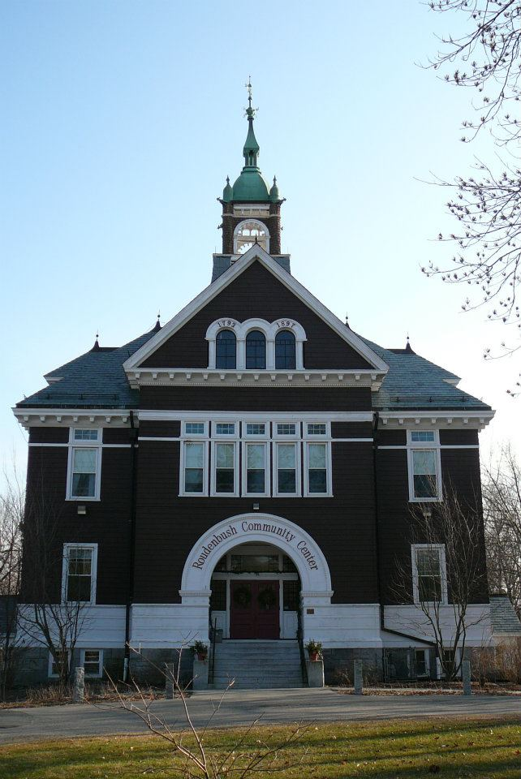
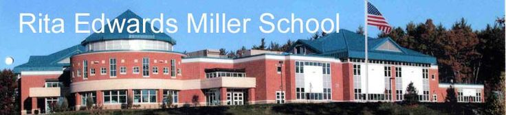
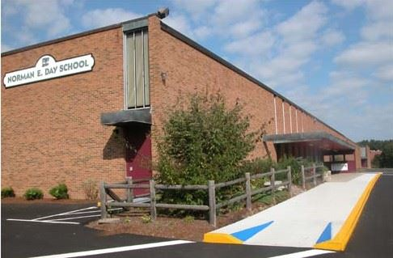
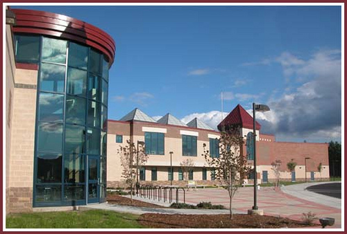
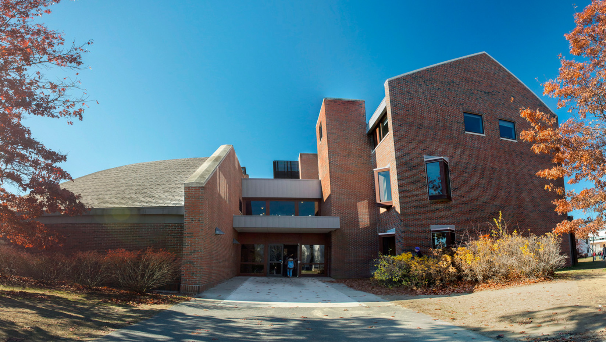

I went to Alphabet Soup in Westford, MA, for preschool, but a year after I left they went bankrupt and had to shut down.
For pre-k I went to Roudenbush in Westford.
For kindergarden through second grade, I attended the Rita E. Miller school, which was built a few years before my class started going there.

I went to the Norman E Day school from third to fifth grade This school was very old, and was only two stories tall.
For middle school, half of my grade was split between Stony Brook and Blanchard, which made for a good friendly school rivalry. I attended Stony Brook, which was the newer of the two, and had the better sports teams.

For high school I went to Westford Academy. Many people think it is a private school, but contrary to popular belief it is public. The old owners said that they would only sell the school if the new owners kept the name, so we have always been Westford Academy (WA)
Now I am a freshman at the University of Maine, studying marketing, and I love it here.